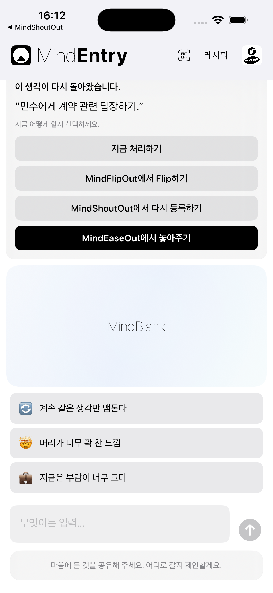
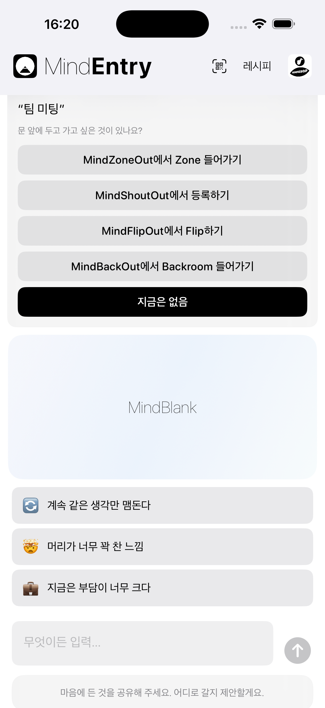

생각의 마찰이 생기기 전에 찾아오는 조용한 제안.
MindPreCog는 MINDBEBOP의 상황 인식 레이어입니다.
리마인더가 다시 나타날 때, 아침이 시작될 때, 취침 시간이 가까워질 때, 회의가 시작되기 직전일 때, 익숙한 상황이 나타날 때, 또는 반복되는 흐름이 형성되기 시작할 때, MindPreCog는 의미 있는 순간과 반복되는 패턴을 알아차리고 적절한 구조적 경로를 제안합니다.
도움이 필요하다는 것을 스스로 깨닫기를 기다리는 대신, MindPreCog는 적절한 순간에 적절한 도구를 조용히 보여줍니다.
분석하지 않습니다. 해석하지 않습니다. 진단하지 않습니다. 생각의 마찰이 커지기 전에 줄일 수 있도록 적절한 순간에 조용한 제안을 제공할 뿐입니다.
대부분의 앱은 사용자가 도움을 요청하기를 기다립니다. MindPreCog는 사용자가 요청하기 전에 구조를 제안합니다.
이러한 순간들은 조금 다르게 반응할 수 있는 조용한 기회가 됩니다.
상황을 인식하는 제안, 마음 읽기가 아닙니다.
MindPreCog는 당신의 생각을 분석하지 않습니다.
대신 다음과 같은 단순한 신호에 반응합니다.
이러한 순간이 발생하면 MindEntry가 열려 가장 적절한 다음 단계를 제안할 수 있습니다.
그것은 생각을 Shout하는 것일 수도 있고, Flip하는 것일 수도 있으며, 다시 예약하는 것일 수도 있습니다. Backroom에 들어가거나, Zone하거나, Release하거나, 레시피를 만들거나, CogniHack을 시작하거나, 혹은 아무것도 하지 않는 것일 수도 있습니다.
아침이 되면 MindEntry는 다음과 같이 물을 수 있습니다.
오늘 무엇에 주의를 기울이고 싶나요?
잠자리에 들기 전에는 MindEntry가 다음과 같이 물을 수 있습니다.
내일을 위해 지금은 내려놓고 싶은 것이 있나요?
회의가 시작되기 전에는 MindEntry가 다음과 같이 물을 수 있습니다.
문 앞에 두고 들어가고 싶은 것이 있나요?
동일한 리마인더가 여러 번 다시 예약된 경우:
이 리마인더가 계속 다시 나타나고 있습니다.
MindEntry는 MindShoutOut, MindFlipOut, MindZoneOut, MindBackOut, 레시피, CogniHack, 또는 아무것도 하지 않는 것과 같은 선택지를 제안할 수 있습니다.
생각의 마찰은 커지기 전에 조금 줄어들 수 있습니다.
분석이 아닌 조용한 알아차림.
MindPreCog는 리마인더, 레시피, 주의를 빼앗는 요소, 상황 또는 행동 흐름이 시간이 지나면서 반복적으로 나타나는 것을 가끔 알아차릴 수 있습니다.
그것은 반복적으로 다시 나타나는 리마인더일 수도 있고, 자주 사용되는 레시피일 수도 있으며, 반복되는 방해 요소일 수도 있고, 여러 MINDBEBOP 도구에 걸쳐 나타나는 익숙한 흐름일 수도 있습니다.
보고서는 생성되지 않습니다. 점수는 계산되지 않습니다. 행동은 평가되지 않습니다.
대신 MindPreCog는 가끔 다음과 같은 간단한 메시지를 제안할 수 있습니다.
이 패턴이 반복되고 있습니다.
목표는 분석이 아닙니다. 반복적으로 나타나는 생각의 마찰이 계속 표면으로 올라오기 전에 그것에 구조를 제공하는 것입니다.
MindPreCog는 의미 있는 순간과 반복되는 패턴을 알아차리고, 필요할 때 구조를 제안할 뿐입니다.


MindPreCog 프롬프트는 MindEntry 안에서 표시됩니다.
앞으로 MindPreCog는 더 많은 상황 인식형 프롬프트와 패턴 신호를 포함하도록 확장될 수 있습니다.
대부분의 정신적 도구는 반응형입니다.
문제를 알아차린 뒤에야 무엇을 할지 결정하게 됩니다.
MindPreCog는 그 간격을 줄여줍니다.
생각의 마찰이 커지기 전에 구조적인 선택지를 제안하고, 때로는 반복되는 패턴이 지속적인 마찰의 원인이 되기 전에 알아차릴 수 있습니다.
MindPreCog는 당신의 마음을 이해하려고 하지 않습니다. 단지 조금 더 일찍 나타나고, 때로는 당신보다 먼저 패턴을 알아차릴 뿐입니다.
Copyright © 2026 MINDBEBOP — All rights reserved.